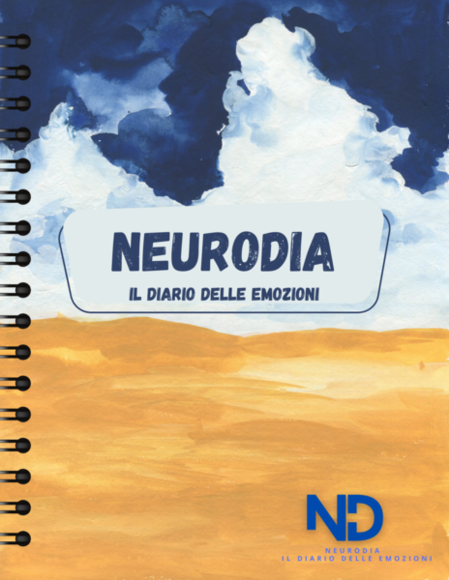

Neurodia - Il diario delle emozioni
Conosci te stesso, un giorno alla volta.
Neurodia non è un semplice diario: è uno strumento creato con cura psicologica per aiutarti a osservare e comprendere le tue emozioni nel contesto della tua vita quotidiana.
Potrai registrare come ti senti, le tue abitudini, il tuo sonno, l’alimentazione, i sintomi fisici e molto altro. Ogni dettaglio conta, perché ogni dettaglio parla di te.
Nel tempo, Neurodia ti aiuterà a individuare schemi ricorrenti, a riconoscere cosa sostiene il tuo benessere e cosa invece lo mette alla prova.
Non sarai solo: avrai la possibilità di confrontarti con la psicologa che ha contribuito allo sviluppo del diario, attraverso un primo colloquio gratuito, per iniziare insieme un percorso di consapevolezza emotiva e cura di sé.
Perché il benessere si costruisce, un giorno alla volta. E tutto inizia da qui.
Cosa ottieni con Neurodia:
- 🔹 Un diario strutturato da una psicologa, con sezioni guidate per monitorare umore, abitudini, sonno, alimentazione, sintomi e altro.
- 🔹 Uno strumento per riconoscere cosa ti fa stare bene e cosa no, basato su evidenze cliniche.
- 🔹 Un primo colloquio gratuito per ricevere un feedback professionale sui tuoi dati.
- 🔹 Un formato comodo e curato: scegli tra versione digitale (PDF interattivo) o cartaceo.
- 🔹 La possibilità di inviare i tuoi dati al professionista, se sei già in terapia o vuoi iniziare un percorso.
💡 Neurodia non è un’agenda qualsiasi: è uno strumento pensato per accompagnarti in un percorso psicologico, anche se non sei ancora in terapia.
Copertina del diario.
Il costo del diario digitale è di 30€ + IVA, mentre il costo per la versione fisica è di 50€ + IVA.
Dopo la registrazione avrai accesso al tuo profilo personalizzato, dove troverai il diario e la possibilità di un primo colloquio gratuito con una psicologa.